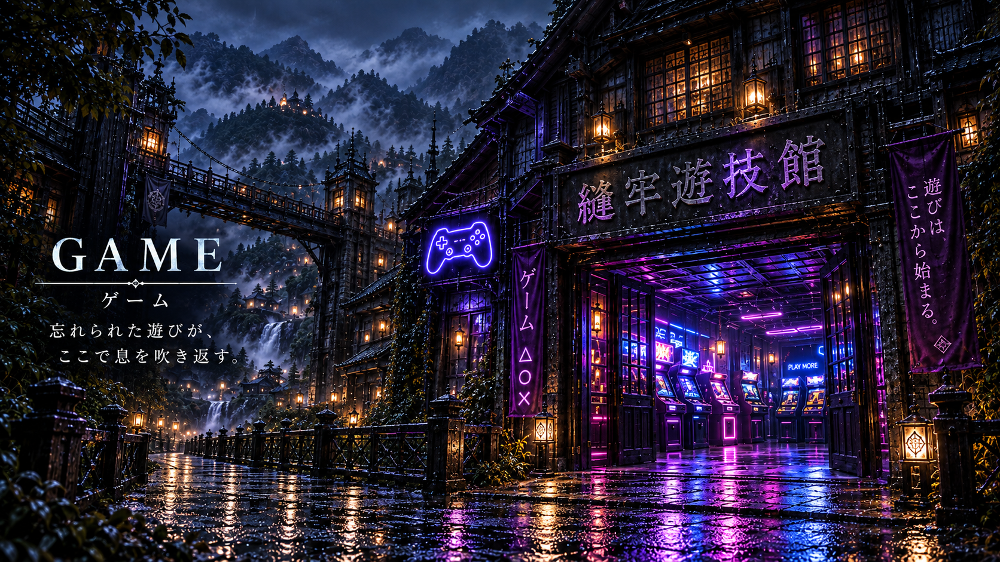
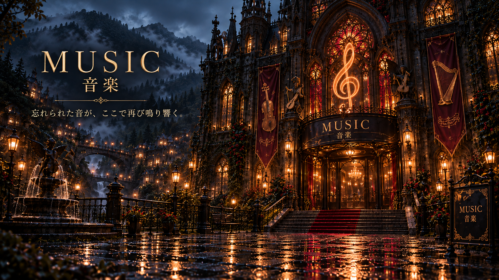

NOVEL
小説
忘れられた物語が、ここにある。
小説を選ぶ01 — 街の案内
読む。遊ぶ。耳を澄ます。
気になる場所から、お入りください。
忘れられた物語が、ここにある。
小説を選ぶ
忘れられた遊びが、ここで息を吹き返す。
ゲームを選ぶ
忘れられた音が、ここで再び鳴り響く。
音楽を聴く02 — 制作中
最新あらすじと設定資料を
ひと足先に公開しています。
 IN DEVELOPMENTおばけ狩猟団VTuberの団長ちゃんが、時の狭間へ迷い込んだ怪異たちを倒すのではなく、本来いるべき時代へ帰していく物語。怖くても、かわいい。倒すのではなく、帰してあげる。最新あらすじと設定資料を見る
IN DEVELOPMENTおばけ狩猟団VTuberの団長ちゃんが、時の狭間へ迷い込んだ怪異たちを倒すのではなく、本来いるべき時代へ帰していく物語。怖くても、かわいい。倒すのではなく、帰してあげる。最新あらすじと設定資料を見る 03 — 作品


不倫相手と肌を重ねた「面積」と「時間」の分だけ、己の本物の皮膚が自動的に剥がれ落ちる究極のナノマシン刑『ジャスティス・スキン』。どれだけ隠そうとしても、浮気をした翌朝には血と肉が剥き出しになるため一発で露見する。生き延びるには全身に包帯を巻き、「私は不倫をしました」と世間に証明しながら激痛に耐えるしかない。 第1話で描かれるのは、どこかでその現実を舐めていたサラリーマン・滝口修平。部下の女性とビジネスホテルで過ごした「40分間」の代償。それは、彼の身体と人生のすべてを文字通り「根こそぎ剥ぎ取る」戦慄のディストピアホラー、ここに開幕。
作品詳細を見る
私立誠藍初等・中等部（小中一貫校）に通う白石紡（しらいし つむぎ）は、誰にでも優しい大人しい少年。女子からも人気があったが、それがクラスのリーダー格・木村の激しい嫉妬を買い、小学5年生の夏から壮絶ないじめを受けるようになる。 精神の限界を迎えた紡が「助けて」…と願った夜から………【アイツ】が生まれてしまった。 それから約1年、紡がいじめを受けた翌日には、なぜかいじめっ子たちに不可解な災厄が降りかかるようになる。しかし紡自身には夜の記憶が一切なく、「アイツ」が何をしているのか、何が起きているのか、本当に何も見えないし分からない。 おとなしい少年の奥底に潜む、言葉の通じない狂気の怪物。これは、理不尽な悪意が最悪の因果応報を招く、戦慄の精神的ディストピア・サスペンス。
作品詳細を見るページを開いただけでは音は流れません。曲名か再生ボタンを押してください。音量が変わらない端末では、本体の音量ボタンもご利用ください。
04 — 縫牢街について
日本のどこかを思わせる、別世界線の小さな街。
忘れられた作品が集まり、縫牢街は生まれました。
この街の住民は、それぞれの過去を持ち、日々を生きています。
年を重ね、家族をつくり、ときには創作への想いを縫主へ託します。
現実とこの街をつなぐもの。
それは、ネット上に現れるひとつのリンクです。
縫牢街は、縫魔妖斗によるオリジナルの創作世界です。
05 — 画廊
手書きから生まれた生成作品を
これから載せていきます。
06 — 縫主について
小説、ゲーム、音楽など、ジャンルに縛られずオリジナル作品を制作しています。
作品を作る時に一番大切にしているのは、オリジナル性とメッセージ性。
最近では、いじめや不倫といった現実に存在する問題をテーマにしながら、それを小説やゲームとして作品に落とし込むことにも挑戦しています。
自分の頭の中にある世界観を、ひとつの場所として形にしたい。そんな思いから生まれたのが、縫牢街です。
AIは、何かを自動で作ってもらうだけの道具ではなく、作品を一緒に考え、育てていく相方・相棒として向き合っています。
アイデアが生まれるのは、何かを考え込んでいる時というより、ふとした瞬間。
これからは、長編ゲーム、アニメ、短編映像など、さらに違った形の作品にも挑戦していきます。
これまで特に好きになったゲーム。
……など。まだまだ好きな作品はたくさんあります。
特に好きなゲームジャンルアクションゲーム
都市伝説は、
怖いんだけど……気になる。
そんな感覚で、つい見てしまいます。
自分の世界観を作りたかったから。
遊びに来て下さってありがとうございます。是非、楽しんで行って下さい✨️